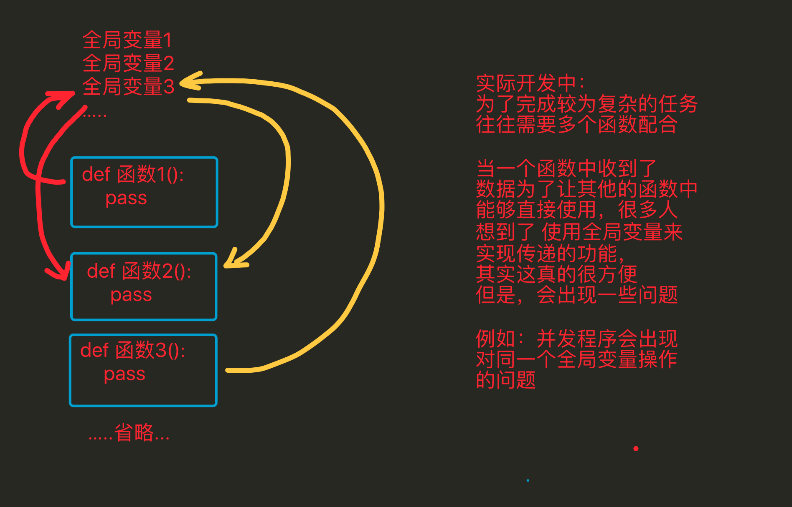
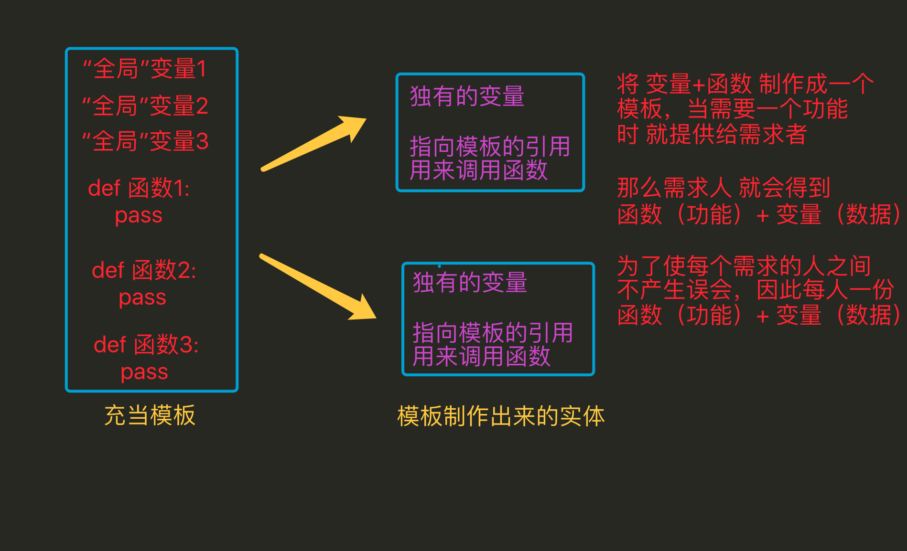

再议 封装、继承、多态
封装、继承、多态 是面向对象的3大特性
1. 封装
使用函数来开发，示例代码如下：

使用面向对象来开发，示例代码如下：
- 类：理解为模板
- 对象：理解为实物

好处
- 在使用面向过程编程时，当需要对数据处理时，需要考虑用哪个模板中哪个函数来进行操作，但是当用面向对象编程时，因为已经将数据存储到了这个独立的空间中，这个独立的空间（即对象）中通过一个特殊的变量（
__class__）能够获取到类（模板），而且这个类中的方法是有一定数量的，与此类无关的将不会出现在本类中，因此需要对数据处理时，可以很快速的定位到需要的方法是谁 这样更方便- 全局变量是只能有1份的，多个函数需要多个备份时，往往需要利用其它的变量来进行储存；而通过封装 会将用来存储数据的这个变量 变为了对象中的一个“全局”变量，只要对象不一样那么这个变量就可以再有1份，所以这样更方便
- 代码划分更清晰
2. 继承

上图中的问题，我们一般会选择 在 类1的基础上进行修改，因为这样更好些
- 能够提升代码的重用率，即开发一个类，可以在多个子功能中直接使用
- 继承能够有效的进行代码的管理，当某个类有问题只要修改这个类就行，而其继承这个类的子类往往不需要就修改
3. 多态
class MiniOS(object):
"""MiniOS 操作系统类 """
def __init__(self, name):
self.name = name
self.apps = [] # 安装的应用程序名称列表
def __str__(self):
return "%s 安装的软件列表为 %s" % (self.name, str(self.apps))
def install_app(self, app):
# 判断是否已经安装了软件
if app.name in self.apps:
print("已经安装了 %s，无需再次安装" % app.name)
else:
app.install()
self.apps.append(app.name)
class App(object):
def __init__(self, name, version, desc):
self.name = name
self.version = version
self.desc = desc
def __str__(self):
return "%s 的当前版本是 %s - %s" % (self.name, self.version, self.desc)
def install(self):
print("将 %s [%s] 的执行程序复制到程序目录..." % (self.name, self.version))
class PyCharm(App):
pass
class Chrome(App):
def install(self):
print("正在解压缩安装程序...")
super().install()
linux = MiniOS("Linux")
print(linux)
pycharm = PyCharm("PyCharm", "1.0", "python 开发的 IDE 环境")
chrome = Chrome("Chrome", "2.0", "谷歌浏览器")
linux.install_app(pycharm)
linux.install_app(chrome)
linux.install_app(chrome)
print(linux)
运行结果
Linux 安装的软件列表为 []
将 PyCharm [1.0] 的执行程序复制到程序目录...
正在解压缩安装程序...
将 Chrome [2.0] 的执行程序复制到程序目录...
已经安装了 Chrome，无需再次安装
Linux 安装的软件列表为 ['PyCharm', 'Chrome']
小总结：
多态需要用到继承，重写，调用某个方法时，要看是父类创建的实例，还是子类创建的实例，实例不同调用的方法不同
4. 面向过程 vs 面向对象
4.1 面向过程
全局变量1
全局变量2
全局变量3
...
def 函数1():
pass
def 函数2():
pass
def 函数3():
pass
def 函数4():
pass
def 函数5():
pass
4.2 面向对象
class 类(object):
属性1
属性2
def 方法1(self):
pass
def 方法2(self):
pass
class 类2(object):
属性3
def 方法3(self):
pass
def 方法4(self):
pass
def 方法5(self):
pass
5. 小总结
面向过程开发，简单、开发前期快速，越往后越复杂，适合小工程
面向对象开发，复杂、开发前期较慢，越往后开发越方便，适合大工程
没有最好的开发模式，只有经过多多练习，见的多了，感受多了，自然也就能够在不同的任务、不同的工程，使用合适的方式进行开发